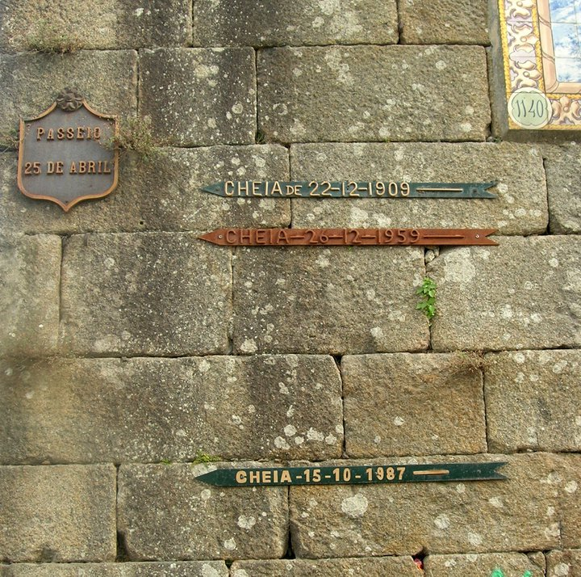

Turismo em Ponte de Lima
Ponte de Lima
é uma vila portuguesa do Distrito de Viana do Castelo sendo parte da sub-região do Alto Minho, pertencente à região do Norte, e sendo sede do Município de Ponte de Lima que tem uma superfície de 320 km² e 41 169 habitantes em 2021, tendo, por isso, uma densidade populacional de 128 habitantes por km2, estando subdividido por 39 freguesias.Situada nas margens do rio Lima, e com uma área urbana de 2,72 km2, a vila é frequentemente referida como a vila mais antiga de Portugal, tendo recebido a sua carta de Foral em 1125. O seu nome deriva da ponte que atravessa o rio Lima, construída pelos romanos e posteriormente ampliada na Idade Média.
Imagem cheias
